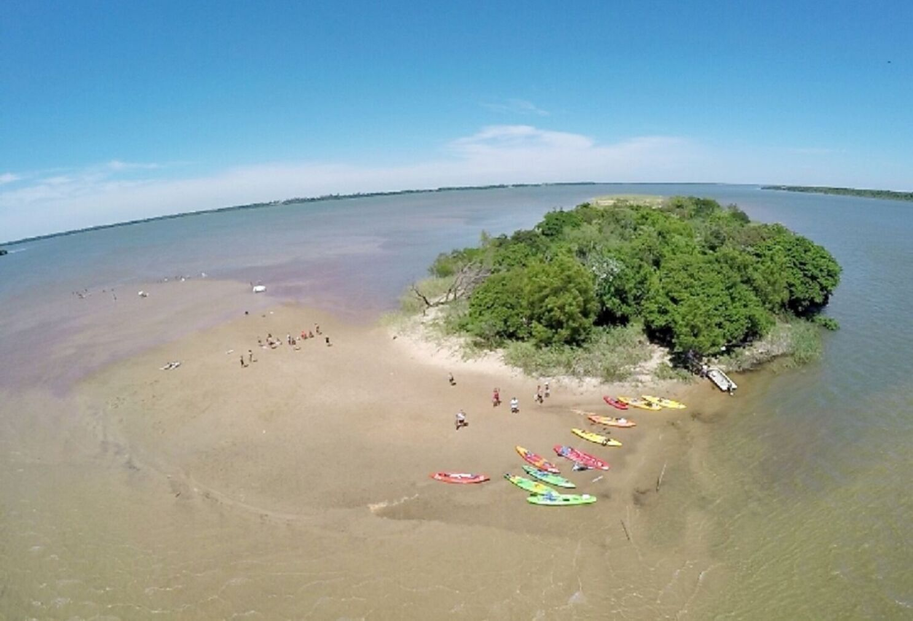
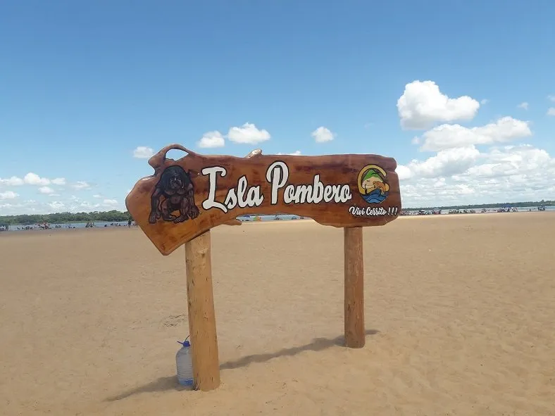
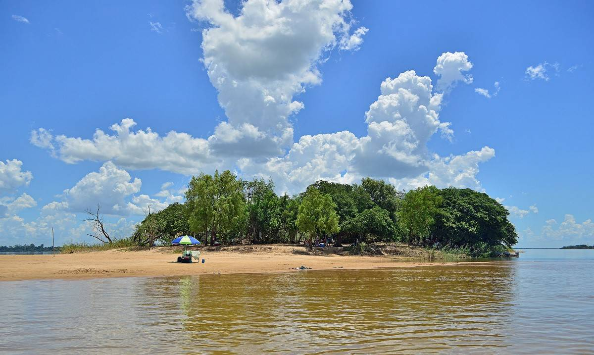
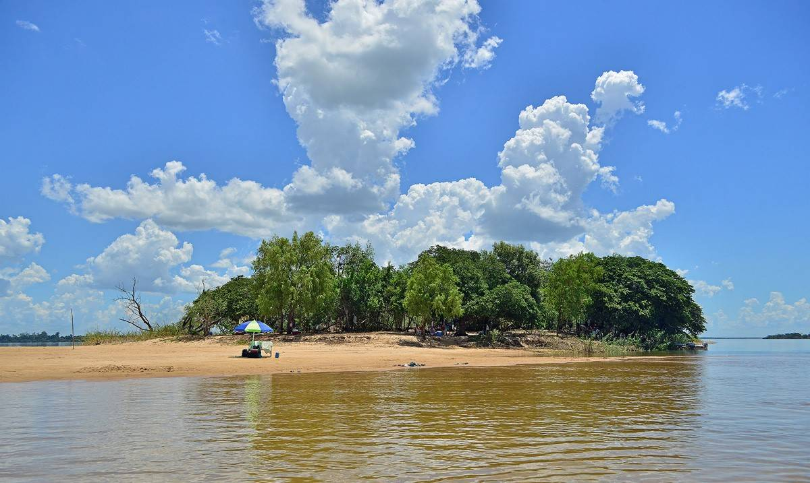

La Isla Pombero es una de las maravillas que ofrece Cerrito, y esta situada en el departamento de Ñeembucú, aproximadamente 120 km de la capital departamental, Pilar. Éste es un sitio único en el Paraguay, y su fama ha transcendido las fronteras por ser un maravilloso atractivo turístico natural, debido a sus grandes bancos de arena, su vegetación exuberante, y sobre todo por las aguas transparentes de Río Paraná.
Ésta isla tiene una exuberante vegetación, así que da sombra gracias sus árboles nativos, ayudando a proteger a las familias de los rigores del sol, y además es hábitat de infinidad de aves acuáticas. La isla Pombero está rodeada por un bosque que contiene un gran número de animales. Es un sitio que tiene una biodiversidad increíble. En el bosque se pueden ver monos araña, monos araña bolas y monos azules. También hay muchas especies de plantas. La isla Pombero es un ecosistema prácticamente virgen. Se ha logrado mantener la isla libre de cambios que hayan impactado su naturaleza.
La isla Pombero se considera un verdadero paraje natural, ya que todavía no se han creado carreteras ni se han alterado la vegetación en el lugar. Consideran que la naturaleza está viva en la isla Pombero, como tambien un gran depósito de cultura y de costumbres. Los habitantes de la zona consideran que la isla es un lugar de bienvenida y de cultura. Los visitantes tienen la oportunidad de ver artesanías locales, como tejidos de algodón y de helecho. Las artesanías también incluyen joyería hecha con semillas, plumas y otros materiales.
La comida local de la isla Pombero es muy distinta a la de la mayoría de la región. En la isla se prepara la comida con ingredientes locales, como frutas y raíces. Entre las comidas más famosas están la mandioca, la yuca y la yerba mate. Además, se prepara la carne de algunos animales cazados en la zona.
  
